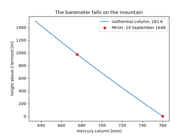
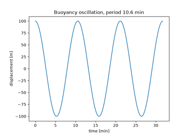
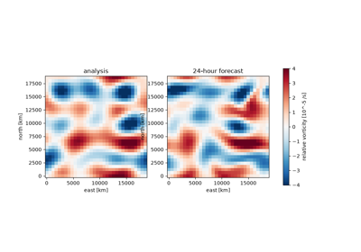

Atmosphere examples#
One executed example per breakthrough in Breakthroughs in Atmosphere, in chronological order, each with an asserted check of the result it shows. Download the Python source or notebook from each page. Atmosphere: units, equations and validation records units and limits; all examples use deterministic synthetic inputs and require no downloads.

Pascal and Périer on the Puy de Dôme (1648)
Pascal and Périer on the Puy de Dôme (1648)

Väisälä and Brunt’s buoyancy frequency (1925)
Väisälä and Brunt's buoyancy frequency (1925)

Charney, Fjørtoft and von Neumann’s ENIAC forecast (1950)
Charney, Fjørtoft and von Neumann's ENIAC forecast (1950)